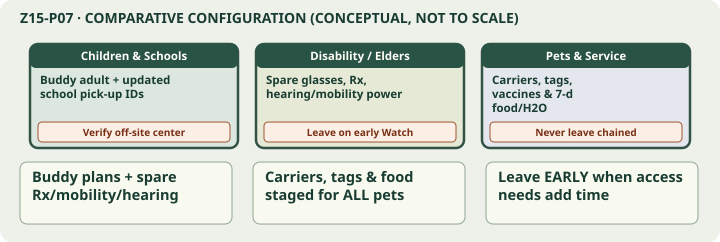

Z15-P07 · Disaster scenarios · New manuscript
Account for children, older adults, disabilities, and pets in every plan
Eliminate life-threatening last-minute gaps for household members who need extra time, mobility assistance, medications, or animal transport.
When it applies · Every household caring for children, older adults, individuals with access/functional needs, service animals, or pets.
Equipment · Written individual support plans, spare medical/mobility aids, labeled comfort/care bags, and pet leashes/carriers.

Actions
- Build explicit individualized plans BEFORE disasters: identify personal support buddies for older or mobility-limited adults, pack spare eyeglasses/hearing-aid batteries/mobility chargers and 7+ days of prescriptions, and confirm accessible evacuation vehicles ahead of time.[T10, D17]
- Pre-pack sturdy leashes, carriers, collars with current ID tags, vaccination records, and 7+ days of food/water for companion pets and service animals—NEVER leave pets chained or locked inside homes during mandatory evacuations.[D17, P15]
- Verify school, daycare, and senior-facility emergency evacuation locations and authorized pick-up lists twice a year so parents/caregivers know exact institutional reunification rules.[T11, D17]
Failure recognition · Trying to wrangle two terrified loose cats during a 10-minute wildfire evacuation without carriers, or forgetting a grandparent's hearing-aid batteries and wheelchair charger.[T10, D17]
Verify · Confirm buddy assignments, spare sensory/mobility/medication items packed, pet carriers staged by exits, and school/care-facility plans verified.[T10, D17]
Stop or change course · Extra evacuation lead time is non-negotiable for households with access needs—leave on early advisory/voluntary notices rather than waiting for final-hour orders.[T10, D14]
Evidence and editorial notes
- D14 · FEMA / Ready.gov · Evacuation (current web edition)
- Section: Before, during and after evacuation · Conditions: Official evacuation or a preplanned, safely accessible departure
Support: Prepare a go-kit, routes, transport and a contact plan. Follow official routes and use the locally indicated registration or reunification channel.
Limitations: Shelter accessibility and animal accommodations require local and ADA guidance; no fixed national website is assumed. · Conflicting evidence: See A02 claim audit for boundaries.
Editorial note: Core evacuation execution and accountability evidence in Z15. · Specialist reviewer: Emergency management and transportation safety
Primary source · checked 2026-11-24 - D17 · FEMA / Ready.gov · Prepare Your Pets for Disasters (current web edition)
- Section: Pet, Service-Animal, and Vulnerable-Member Accountability · Conditions: Households with pets, service animals, children, older adults, or access/functional needs
Support: Include leashes, carriers, vaccination records, pet food/water, and pet-friendly shelter lists in household evacuation plans—never leave pets chained or trapped behind; coordinate explicit buddy assignments for children, older adults, and mobility/power-dependent household members.
Limitations: General public Red Cross shelters always admit service animals under ADA rules, whereas companion pets often require separate co-located or pet-friendly shelters. · Conflicting evidence: None; complements T10 disability planning.
Editorial note: Ensures complete household and vulnerable-group accountability in Z15. · Specialist reviewer: Accessible emergency management and animal welfare
Primary source · checked 2026-11-24 - P15 · FEMA / Ready.gov · Emergency Food Supply (current web edition)
- Section: Emergency Food Inventory > Non-Perishable Rotation, Dietary Needs, and Tools · Conditions: Household multi-day to 30-day emergency pantry planning
Support: Build a rotated pantry of familiar shelf-stable foods requiring minimal water and no refrigeration (canned proteins/vegetables, dry grains/legumes, nut butters, infant/medical/pet diets), keep a manual can opener, and mark purchase/rotation dates clearly (FIFO).
Limitations: Do not invent unverified multi-decade shelf lives; commercial "Best By" dates reflect quality while damaged, rusted, or dented-seam cans pose safety hazards. · Conflicting evidence: None; aligns with FSG-4 and NCHFP storage hygiene.
Editorial note: Grounds household food inventory, FIFO rotation, and can-integrity screening. · Specialist reviewer: Household preparedness and food safety
Primary source · checked 2026-11-24 - T10 · FEMA / Ready.gov · People with Disabilities (current web edition)
- Section: People with Disabilities > Make a Plan and Build a Kit · Conditions: Individuals with mobility, sensory, medical, or power-dependent access and functional needs
Support: Build a personal support network, plan accessible evacuation transport, register voluntarily with local emergency registries where available, and plan backup power and spare supplies for medical devices, medications, and service animals.
Limitations: Local registry availability and utility priority-restoration policies vary by jurisdiction. · Conflicting evidence: None; extends generic preparedness plans to accessible requirements.
Editorial note: Directly addresses Z01 accessible emergency planning requirement. · Specialist reviewer: Accessible emergency management and disability preparedness
Primary source · checked 2026-11-24 - T11 · FEMA / Ready.gov · Make a Plan (current web edition)
- Section: Make a Plan > Family Emergency Communication Plan · Conditions: Households and traveling groups preparing for disruptions
Support: Record out-of-area contacts, local meeting places, medical/allergy summaries, and alternate communication channels (text vs voice) in paper and offline formats; practice the plan periodically.
Limitations: Cellular networks often congest during disasters while SMS or out-of-area contacts may still connect. · Conflicting evidence: None; complements outdoor trip-plan cards.
Editorial note: Anchors emergency communication protocols and group contingency plans. · Specialist reviewer: Emergency management and communications
Primary source · checked 2026-11-24
Source lineage · FEMA People with Disabilities and Pets; new manuscript · Classification · New manuscript.